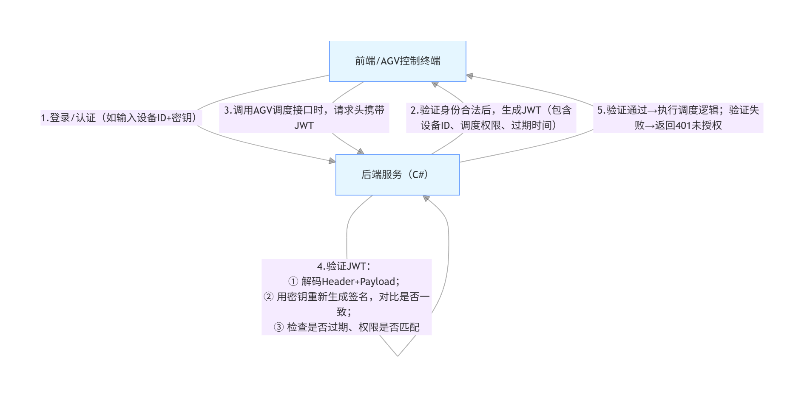

接口相关问题
目录
什么是幂等性？
接口幂等性指的是：同一个请求被执行一次或多次，最终对系统产生的影响是一样的（结果与副作用一致）。
常见例子：同一笔支付请求重复提交多次，最终只会产生一笔扣款记录。
✅ 如何保证幂等性（常用方案）
1. 幂等唯一标识（Idempotency Key）
- 客户端生成唯一请求 ID（如订单号、UUID）。
- 服务端保存处理结果或标记，重复请求直接返回第一次结果。 适用：下单、支付、转账等。
2. 数据库唯一约束
- 关键字段加唯一索引（如业务订单号）。
- 重复插入会失败，从而避免重复数据。 适用：创建记录类接口。
3. 状态机 + 版本号（乐观锁）
- 更新时检查版本号或状态是否匹配。
- 不匹配则拒绝或重试，避免重复更新。 适用：订单状态流转、库存扣减。
4. 去重表 / 业务日志表
- 每次处理请求前先记录请求标识。
- 如果记录存在则不再执行。 适用：消息消费、回调接口。
5. 分布式锁（谨慎使用）
- 保证同一业务对象短时间内只能被一个请求处理。
- 可以用 Redis 锁或数据库锁。 适用：高并发更新，防重复执行。
✅ 设计时注意
- 幂等性关注的是最终结果一致，不是过程一致。
- 查询接口（GET）天然幂等，写接口（POST/PUT/DELETE）需要设计。
如果你愿意，可以告诉我你具体的业务场景（比如支付回调、扣库存、发券等），我可以给你更准确的幂等方案。
JWT鉴权的原理
JWT（JSON Web Token）鉴权属于身份认证与授权（Authentication & Authorization） 领域，是分布式系统、前后端分离架构、微服务架构中最常用的无状态身份验证技术，核心解决 “如何安全、高效地验证用户 / 系统身份，并授予对应操作权限” 的问题。 JWT 的本质是一段加密的 JSON 字符串，由服务端生成后发给客户端，客户端后续请求时携带这个字符串，服务端只需验证字符串的合法性，就能确认身份，无需像传统 Session 那样存储用户状态（无状态）。
1. JWT 的结构（三段式，用.分隔）
|
|
拆解为 3 部分：
- Header（头部）：声明加密算法（如 HS256）和令牌类型（JWT），Base64 编码（可解码，非加密）；
- Payload（载荷）：存储核心身份信息（如用户 ID、设备 ID、权限范围、过期时间），Base64 编码（可解码，不要存密码等敏感信息）；
- Signature（签名）：服务端用「Header+Payload + 密钥（Secret）」按声明的算法加密生成，是 JWT 的核心安全保障。
